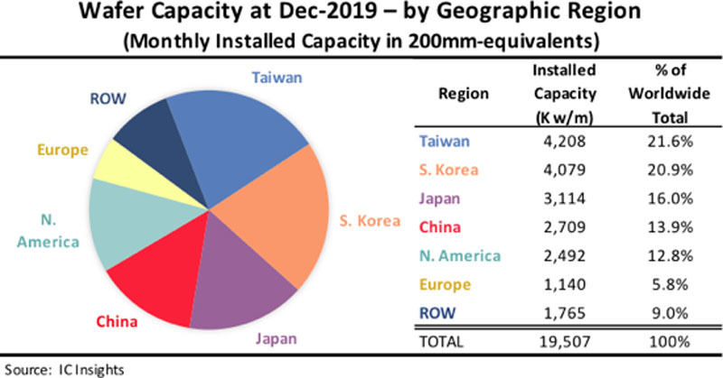

半導体不足によりいろいろな業界への影響
Home
半導体
オリンピック
マスクの効果

半導体生産国ランキング2019
1位 台湾 21.6% 2位 韓国 20.9% 3位 日本 16.0% 4位 中国13.9%
5位 北アメリカ 12.8% 6位 ヨーロッパ 5.8% その他 9.0%
アジア諸国の生産量が高い。製造に高度な技術が必要なため発展途上国より先進国で製造される傾向にある。
自動車業界への影響
事の発端は、コロナウイルスによってPCに必要とされる半導体が多く必要となってしまい不足した。それに拍車をかけるように、中国の自動車市場の回復を受け、半導体不足で車の生産が制限される状態にまで陥った。
半導体の製造には3か月以上の時間が必要とされるために、発注してもすぐに届くことがないので急に製造台数が増加してしまうと対応することが出来ないのです。
米政府による中国の制裁もあって、半導体の調達先が限られてしまったのも一つの要因です。
筆者の考え
今後も半導体の需要量は増えていくと考えています。そうなると各国で半導体の争奪戦が起きそうですね。日本国内でも簡単なことではないですが、国内生産の体制を見直す良い機会となるのではないでしょうか？